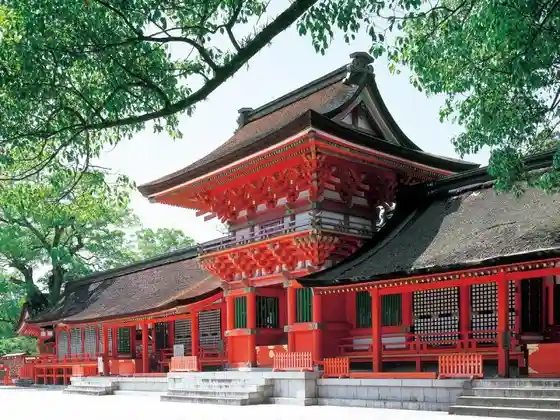
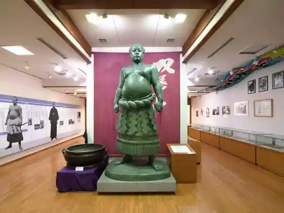
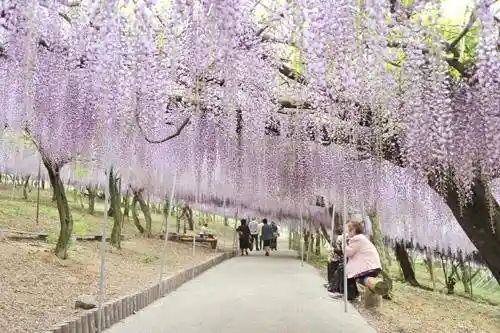
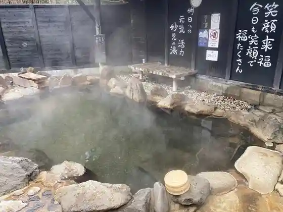

Usa Shrine
Usa, Oita · 0978-37-0001 · Official / source link

Sato no Eki Futaba Village
Usa, Oita · 0978-33-5255 · Official / source link

Sen Zai Farm
Usa, Oita · 0978-33-2388 · Official / source link

Innai Myoken Onsen
Usa, Oita · 0978-42-5911 · Official / source link

Karashima Kyoku no Kura (Karashimakoku no Kura)
Usa, Oita · 0978-32-1432 · Official / source link
Ajimu (Ajimu) Chiisa Na Wain Workshop
Usa, Oita · 0978-44-4244 · Official / source link
Toko Tera Gohyaku Rakan
Usa, Oita · 0978-38-5788 · Official / source link
Kyushu Shizen Dobutsu Park Afurikansafari
Usa, Oita · 0978-48-2331 · Official / source link
Ajimu (Ajimu) Budo Sake Workshop
Usa, Oita · 0978-34-2210 · Official / source link
akagera
Usa, Oita · 070-2347-5152 · Official / source link
Ryota no Tebasaki
Usa, Oita · 0978-32-2077 · Official / source link
Dairaku (Dairaku) Tera
Usa, Oita · 0978-37-0356 · Official / source link
Oitaken History Museum Fudoki no Oka
Usa, Oita · 0978-37-2100 · Official / source link
Honke Katsu Takara Ajimu Tei
Usa, Oita · 0978-44-2118 · Official / source link
Gaku Setsu (Takkiri) Gorge Campground
Usa, Oita · 0978-42-5111 · Official / source link
Takasu (Takasu) Suspension Bridge Park
Usa, Oita · 0978-27-8171 · Official / source link
Innai Yo (Amari) Onsen
Usa, Oita · 0978-42-7048 · Official / source link
Mahoroba Onsen Usagi Kyo (Usa)
Usa, Oita · 0978-37-3711 · Official / source link
Sato no Eki Sho no Iwa no Sho
Usa, Oita · 0978-34-2224 · Official / source link
Fuku Gen Tera Enma Hora (Fukugonjienmado)
Usa, Oita · 0978-42-6915 · Official / source link
Fukuki no (Fuki no) Falls
Usa, Oita · 0978-34-4839 · Official / source link
Roadside Station Innai
Usa, Oita · 0978-42-5539 · Official / source link
Higashi Shii Ya Falls (Higashishiiya no Taki)
Usa, Oita · 0978-34-4839 · Official / source link
Nishi Shii Ya (Nishishiiya) no Oicho
Usa, Oita · 0978-37-0202 · Official / source link
Shochu Seishu
Usa, Oita · 0978-37-0202 · Official / source link
Shika Arashi (Kanarase) Yama
Usa, Oita · 0978-37-0202 · Official / source link
Keisho Tera Jigoku Gokuraku
Usa, Oita · 0978-34-4839 · Official / source link
Usa Heisei Reiwa no Mori Supotsu Park
Usa, Oita · 0978-42-5894 · Official / source link
Usa no Machupichu
Usa, Oita · 0978-37-0202 · Official / source link
Usa Karage
Usa, Oita · 0978-27-8171 · Official / source link
Innai Town Ishibashi Gun
Usa, Oita · 0978-37-0202 · Official / source link
Innai Yuzu
Usa, Oita · 0978-37-0202 · Official / source link
Wainariiresutoran Asagiri no Sho
Usa, Oita · 0978-44-1236 · Official / source link
Suppon Ryori
Usa, Oita · 0978-34-4839 · Official / source link
Ju Hozan Daijo In Oni no Miira
Usa, Oita · 0978-37-0202 · Official / source link
Itsumi (Henmi) Tei Garden
Usa, Oita · 0978-37-0202 · Official / source link
Hyaku Karada Sha (Hyakutaisha) Kyo Kubi (Kyoshu) Tsuka Burial Mound
Usa, Oita · 0978-37-0202 · Official / source link
Mitsuoka Castle Ruins
Usa, Oita · 0978-37-0202 · Official / source link
Kosaka (Osaka) Fudo Mikoto
Usa, Oita · 0978-37-0202 · Official / source link
Sen no Iwa
Usa, Oita · 0978-34-4839 · Official / source link
Sada Kyo Ishi (Sadakyoishi)
Usa, Oita · 0978-34-4839 · Official / source link
Naramoto (Naramoto) Magai Hotoke
Usa, Oita · 0978-34-4839 · Official / source link
Kaori Shita (Koshita) Dam Suspension Bridge
Usa, Oita · 0978-37-0202 · Official / source link
Ryo Go (Ryoai) Tanada
Usa, Oita · 0978-27-8156 · Official / source link
Yo (Amari) Falls
Usa, Oita · 0978-37-0202 · Official / source link
Nishimoto Gan Tera Yokka City Betsuin
Usa, Oita · 0978-32-1901 · Official / source link
Higashimoto Gan Tera Yokka City Betsuin
Usa, Oita · 0978-32-0050 · Official / source link
Ryugan Tera
Usa, Oita · 0978-42-6560 · Official / source link
Shiroi Ichigo Entai Hori Shiseki Park
Usa, Oita · 0978-27-8199 · Official / source link
Ajimu (Ajimu) Kote Gun
Usa, Oita · 0978-34-4839 · Official / source link
Usa Heiwa Museum
Usa, Oita · 0978-27-8199 · Official / source link
Kanaya Onsen
Usa, Oita · 0978-38-6222 · Official / source link
Tsubusa (Tsubusa) Onsen (Tsubusa Rojin Kei no Ie)
Usa, Oita · 0978-48-2037 · Official / source link
Fukami Onsen (Fukami Rojin Ikoi no Ie)
Usa, Oita · 0978-44-4718 · Official / source link
Ajimu Onsen Center
Usa, Oita · 0978-44-1988 · Official / source link
Sada Onsen (Sada Rojin Kei no Ie)
Usa, Oita · 0978-44-2180 · Official / source link
Kazokuryoko Village (Ajimu (Ajimu))
Usa, Oita · 0978-44-1955 · Official / source link
Buzen Shibahara Zenkoji
Usa, Oita · 0978-32-7676 · Official / source link
Shimizu (Seisui) Tera
Usa, Oita · 0978-33-1426 · Official / source link
Dai Zen (Daizen) Tera
Usa, Oita · 0978-37-2827 · Official / source link
Gokuraku Tera
Usa, Oita · 0978-37-0407 · Official / source link
Omoto (Omoto) Shrine
Usa, Oita · 0978-37-0202 · Official / source link
Nanko Tera Nio Zo
Usa, Oita · 0978-34-4839 · Official / source link
Gan Shiru
Usa, Oita · 0978-37-0202 · Official / source link
Yama Kura no Ichiigashi
Usa, Oita · 0978-34-4839 · Official / source link
Yokaro Park Campground
Usa, Oita · 0978-42-7395 · Official / source link
Usa Yakusho
Usa, Oita · 0978-32-1111 · Official / source link